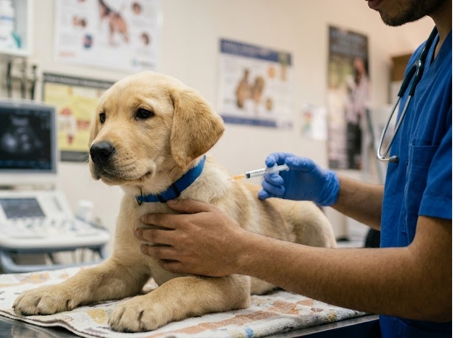

En Perfect Pet cuidamos la salud y el bienestar de tu mascota con atención profesional, equipo especializado y mucho amor por los animales.
Salud de la piel, oído y pelaje de tu mascota.
Control y seguimiento especializado.
Documentos oficiales para tu mascota.
Chequeo médico de rutina.
Asesoría para ganaderos y productores.
Un chequeo preventivo permite detectar a tiempo padecimientos silenciosos.
Esquemas de vacunación completos para perros y gatos

Contamos con el esquema completo de vacunación canina, desde cachorro hasta adulto, para mantener a tu perro protegido en cada etapa.
Agendar cita
Ofrecemos el esquema completo de vacunación felina, cuidando a tu michi desde sus primeras semanas de vida.
Agendar citaConsulta con nuestro equipo el esquema y calendario recomendado para tu mascota.
Diagnóstico preciso con equipo profesional

Realizamos estudios de ultrasonido y rayos X con equipo profesional, brindando a tu mascota una atención segura, delicada y precisa durante todo el procedimiento.